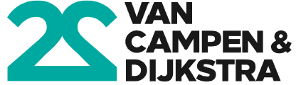
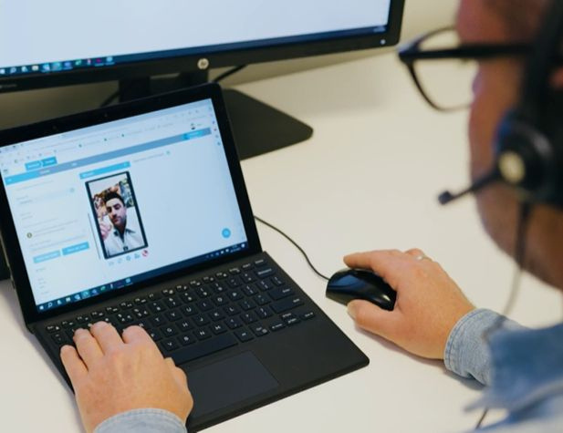

Remote
expertise
Snelle, zorgvuldige en duurzame schadevaststelling — digitaal waar het kan, persoonlijk waar het moet.

Herkent u dit?
Het moment van schade is hét moment waarop u het verschil maakt. En de lat ligt hoog.
Direct hulp en duidelijkheid
Verzekerden verwachten bij schade direct hulp en snel duidelijkheid over de dekking.
SnelheidEen digitale ervaring
Verzekerden leven in een digitale wereld — die ervaring verwachten zij in toenemende mate ook bij hulp met schade.
GemakPassend bij hun waarden
Duurzaamheid wordt steeds belangrijker: een verzekering die beschermt én bijdraagt aan een duurzamere wereld.
DuurzaamheidCED investeert in experts én in digitale schadevaststelling
Gemak voor de klant staat daarbij altijd centraal.
Zorgvuldige schadevaststelling, snel geregeld
Ervaren, speciaal getrainde experts stellen de schade op afstand vast. Op verzoek beoordelen wij ook de dekking.
Flexibel en schaalbaar
Digitaal op afstand, met behoud van persoonlijk contact. Het hele jaar verzekerd van capaciteit — en bij calamiteiten snel opschalen.
Duurzaam én kostenbesparend
Minder reisbewegingen betekent een kleinere ecologische voetafdruk — u spaart het milieu en bespaart kosten tegelijk.
Een helder proces in vier stappen
Door verzekerden met digitaal gemak snel inzicht en duidelijkheid te geven over de schade, dragen we bij aan een hogere klanttevredenheid.
Schademelding & triage
Uw behandelaar ontvangt de melding, maakt het dossier compleet en voert de triage uit. Wij delen graag onze criteria om te bepalen of remote expertise passend is.
Intake & uitnodiging
De verzekerde plant de remote expertise zelf in via een selfservice portal, op een moment dat hem of haar uitkomt.
Intake binnen 1 werkdagRemote expertise
De expert voert de expertise uit op het afgesproken moment. De verzekerde hoeft niets te installeren; met diens goedkeuring maken wij op afstand foto's van de schade.
Rapportage
U ontvangt een duidelijk schaderapport met aanbevelingen voor herstel of vervanging. Desgewenst inclusief dekkingsbeoordeling.
Rapport binnen 2 werkdagenSnelle opvolging zorgt voor hoge klanttevredenheid
Sommige schades lenen zich uitstekend voor expertise op afstand. Dat is prettig voor uw klanten én voor u: dossiers sluiten sneller, en als het druk is helpt u uw klanten toch vlot verder. En mocht het niet anders kunnen, dan zetten we natuurlijk fysieke expertise voor u in.

Wanneer is remote expertise passend?
Onze experts hebben de kennis en ervaring om een schade op afstand vakkundig, persoonlijk en snel te behandelen — met slimme digitale tooling, zorgvuldig én efficiënt.
Wél remote
- Raming tot maximaal € 10.000
- Alle voorkomende opstal- en inboedelclaims
Niet remote
- Lekkages van buitenaf
- Fraude-indicatie
- Dresden- / porseleinen beelden en kunstvoorwerpen
- Beroving / overval
- Bedrijfsschade
- AVB (aansprakelijkheid)
Zo verstrekt u een opdracht
Eén mail met een compleet dossier — dan kunnen wij direct voor u aan de slag.
Meesturen in het dossier
Prijsopgave / offerte
SAF schadeaangifteformulier
Polisinformatie
Eventuele opmerkingen van de schadebehandelaar
Elke opdracht start met een zorgvuldige triage
Uitgangspunt: rapportage van de remote expertise binnen 2 dagen. Snelle opvolging zorgt voor hoge klanttevredenheid.
Alle binnenkomende remote opdrachten gaan naar triageEén vast startpunt voor elke opdracht.
Controle op complexiteitPast de schade binnen de criteria voor expertise op afstand?
Controle op compleetheid van het dossierSAF, polisinformatie en opmerkingen van de behandelaar aanwezig.
In een uiterst geval: omzetten naar fysieke expertiseMocht het niet anders kunnen, dan staat onze buitendienst klaar.
Vragen?
Sommige schades lenen zich uitstekend voor expertise op afstand: sneller gesloten dossiers, tevreden klanten en verzekerde capaciteit — het hele jaar door.